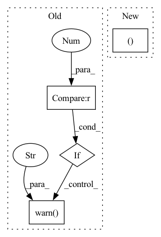

Pattern ID :30114

Before Change
_check_windowing_arguments(
start_offset_samples, stop_offset_samples,
window_size_samples, window_stride_samples)
if stop_offset_samples == 0:
warnings.warn(
"Meaning of `trial_stop_offset_samples`=0 has changed, use `None` "
"to indicate end of trial/recording. Using `None`.")
stop_offset_samples = None
if start_offset_samples is not None or stop_offset_samples is not None:
warnings.warn("Usage of offset_sample args in create_fixed_length_windows is deprecated and"
After Change
windows_ds: WindowsDataset
Dataset containing the extracted windows.
stop_offset_samples, drop_last_window = _check_and_set_fixed_length_window_arguments(
start_offset_samples, stop_offset_samples, window_size_samples, window_stride_samples,
drop_last_window)
In pattern: SUPERPATTERN
Frequency: 3
Non-data size: 4
Instances
Fragment ID: 89277415
Project Name: braindecode/braindecode
Commit Name: d47991998e0a0687e73c12d89d61d45f5be26ecc
Time: 2021-06-25
Author: dan.c.wil@gmail.com
File Name: braindecode/preprocessing/windowers.py
M Class Name: AnonimousClass
N Class Name: AnonimousClass
M Method Name: create_fixed_length_windows(14)
N Method Name: create_fixed_length_windows(14)
M Parent Class:
N Parent Class:
M File Name: braindecode/preprocessing/windowers.py
N File Name: braindecode/preprocessing/windowers.py
M Start Line: 122
M End Line: 181
N Start Line: 123
N End Line: 183
'>
Before Change
if stop_sequence is not None:
stop_sequence_ids = self.tokenizer.encode(stop_sequence, add_special_tokens=False)
if len(stop_sequence_ids) > 1:
warnings.warn(
"Stopping on a multiple token sequence is not yet supported on transformers. The first token of"
" the stop sequence will be used as the stop sequence string in the interim."
)
generate_kwargs["eos_token_id"] = stop_sequence_ids[0]
return preprocess_params, forward_params, postprocess_params
After Change
max_input_length=None,
**generate_kwargs,
):
preprocess_params, forward_params, postprocess_params = super()._sanitize_parameters(
return_tensors,
return_text,
return_type,
'>
Fragment ID: 89277418
Project Name: huggingface/optimum-graphcore
Commit Name: 664159a88f3b26ebb5a6f76bd8343285f1693c67
Time: 2023-03-22
Author: 19981378+HMellor@users.noreply.github.com
File Name: optimum/graphcore/pipelines/text2text_generation.py
M Class Name: IPUText2TextGenerationPipeline
N Class Name: IPUText2TextGenerationPipeline
M Method Name: _sanitize_parameters(8)
N Method Name: _sanitize_parameters(8)
M Parent Class: Text2TextGenerationPipeline
N Parent Class: Text2TextGenerationPipeline
M File Name: optimum/graphcore/pipelines/text2text_generation.py
N File Name: optimum/graphcore/pipelines/text2text_generation.py
M Start Line: 19
M End Line: 46
N Start Line: 19
N End Line: 27
'>
Before Change
// see https://github.com/hill-a/stable-baselines/issues/863
self.remove_time_limit_termination = remove_time_limit_termination
if train_freq > 0 and n_episodes_rollout > 0:
warnings.warn(
"You passed a positive value for `train_freq` and `n_episodes_rollout`."
"Please make sure this is intended. "
"The agent will collect data by stepping in the environment "
"until both conditions are true: "
"`number of steps in the env` >= `train_freq` and "
"`number of episodes` > `n_episodes_rollout`"
)
self.actor = None // type: Optional[th.nn.Module]
self.replay_buffer = None // type: Optional[ReplayBuffer]
// Update policy keyword arguments
After Change
self.remove_time_limit_termination = remove_time_limit_termination
if isinstance(train_freq, int):
train_freq = (train_freq, "step")
try:
train_freq = (train_freq[0], TrainFrequencyUnit(train_freq[1]))
'>
Fragment ID: 89277419
Project Name: dlr-rm/stable-baselines3
Commit Name: 0c50d75ecb6287132c9de4d7070e50905c5f632d
Time: 2021-02-27
Author: maximilian@ernestus.de
File Name: stable_baselines3/common/off_policy_algorithm.py
M Class Name: OffPolicyAlgorithm
N Class Name: OffPolicyAlgorithm
M Method Name: __init__(28)
N Method Name: __init__(29)
M Parent Class: BaseAlgorithm
N Parent Class: BaseAlgorithm
M File Name: stable_baselines3/common/off_policy_algorithm.py
N File Name: stable_baselines3/common/off_policy_algorithm.py
M Start Line: 86
M End Line: 149
N Start Line: 84
N End Line: 142